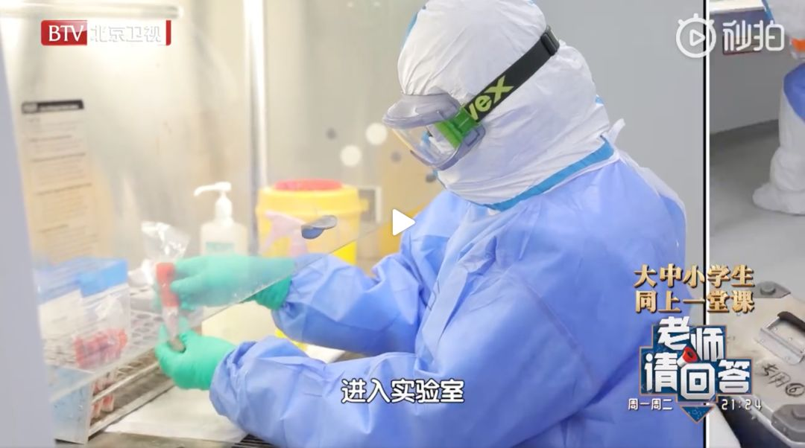

广东14%出院患者复检阳性，专家：可能仍具传染性
原文链接 备份链接 出院并不等于彻底痊愈 2月27日，已经出院19天的徐州居民王先生核酸检测呈阳性，被再次收入定点医院医学观察。 王先生在2月9日出院，经过14天隔离点观察后回家。回家后三天，王先生在新闻上看到部分康复者复检呈阳性，主 …

一月下旬，新冠肺炎疫情最严重的时候，受卫健委的派遣，我和其他同事一起奔赴湖北，支援抗击新冠病毒肺炎疫情。
我的主要工作是新冠病毒核酸检测，也就是在实验室里检测从疑似病例身上采集的样本，主要包括咽拭子、鼻拭子、痰液、肺泡灌洗液等等。
保护自己，保护搭档
我们检测团队，人数并不多，每天常规排两班，有时候排三班。每班工作时间大约七八个小时。如果检测过程中遇到不可抗力的问题，例如仪器出问题，或者需要做试剂验证，可能就会把时间拉长到十几个小时。
根据排班，今天，我是第二班上班。吃过午饭，我才和我的实验搭档一起到了实验室。

我和我的搭档进了实验室｜作者供图
这时候，早上第一班的同事已经做完了实验，离开了实验室。
虽然我们是同事，我们做着同样的工作，但我已经很多天没有见过他们了。为了确保生物安全，我们要求，做完实验，就不要继续在实验室范围逗留，最好马上回酒店，减少人员之间的不必要的接触。这是保护自己，也是保护同事。
这是必要的，也是有效的。
当然，不见面不会让大家变得陌生，网络让不见面的人也可以很亲近。
一个美梦，一个噩梦
大家在工作群里聊得很high，有人问我：“为你申请了安眠药，吃了安眠药，你昨晚睡得怎么样？”
我们到湖北支援已经有四十多天了，穿着三级防护，长时间在负压实验室里工作，呼吸不畅，大脑供氧不足，很容易出现睡眠障碍。不只是我失眠，其他同事也同样有这个问题，所以我们有向负责心理卫生工作的队友申请安眠药。但是，安眠药不会整盒发给我们，队长掌握着药，有同事有需求，队长才会发当晚的药量给对方，并且千叮咛万嘱咐，不能多吃。
我说：“我睡得不错，几乎是吃了药，十几分钟后就睡着了。”
有人开我玩笑：“既然睡得不错，那有做什么美梦吗？”
我：“有啊。”
对方：“梦到见爱豆？”
我：“…………梦到发钱了。发钱才能算美梦。”
所有人都表示这个答案很可以。

真是个美梦
我：“还做了噩梦。”
大家：“什么？”
我：“梦到把提取试剂盒放进了仪器，仪器跑到一半，坏了。我好不容易把仪器重启好了，准备重做刚才的样本，妹妹（我的搭档）就说她刚才把检测的样本高压了。我就吓醒了。”
根据程序，我们需要将检测的样本放进冰箱保存，确定检测样本结果完全无误后，才能在之后几天进行高压灭菌处理。如果对结果有异议，我们便需要拿出样本重做，或者让临床重新采样再检。
仪器坏了，的确堪称噩梦，大家让我不要乌鸦嘴。
在负压实验室直面新冠病毒
我们的检验组，每组是4个人：两个人进入负压实验室核心区进行新冠病毒核酸提取，一个人进行PCR体系配制和扩增，再有一人负责所有协调、物资准备、样本信息确认等工作。
这四十多天内，我们在一起完成新冠病毒的核酸检测工作，而在这之前，我们各自都是从事其他的不同的病原微生物的检测。

病原微生物检测｜截图自BTV北京
这些天的合作，让我们所有人都互相熟悉了：熟悉其他人的性格，以及熟悉和他人配合。这种互相熟悉和互相配合，对于团队工作非常重要，第一是能提高工作效率，第二是更能控制安全风险。
我们是一个团队，要是这个团队里有一个人是猪队友，对实验室造成很大污染，或者是自己感染，那么就很容易造成大家都感染出事。所以，我们务必保证每个人都对生物安全极其重视，每个人都要保证不会出问题。
今天，是我和我的搭档（一个和我性格非常相似的妹妹）完成新冠病毒核酸提取工作这个部分的工作，是新冠病毒检测工作中最危险最容易导致感染的部分，所以，需要我们在负压实验室里完成。
负压实验室，顾名思义，它是空气压力比外界压力更小的实验室；因为压力小，空气流动只会从外向内，那么实验室里的污染就不会扩散到外界，可以保证实验室外面的安全。

负压实验室｜广东疾控中心
下午一点半，我和我的搭档，互相协作，完成了三级防护的穿戴。这是一个繁琐的过程。最开始不太熟悉时，大约要穿戴近半小时，到现在，我们可以在十分钟内完成。
这是一个很有仪式感的过程：
换工作服、换工作鞋、戴一次性工作帽、戴N95口罩并做简单气密性测试、穿一次性防护服、戴第一层长乳胶手套（扎紧防护服的袖子）、穿防水靴套、戴第二层PE手套（PE手套很光滑，可以帮助实验过程中更好更快地脱换第三层手套）、穿戴动力送风过滤系统、穿防水隔离衣、戴第三层手套。
以上完成，我们算是对自己做好了防护，从负压实验室的缓冲间，进入了负压实验室。
三级防护的穿戴｜上海疾控中心
一次性防护服以及防水隔离衣都是不透气的材料，我们全身罩在里面，刚穿上就会很热；特别是现在，每天温度都在二十摄氏度上下，即使实验室里开上了空调，依然一进入就马上热到出汗。所以，我和我的搭档，并不想和对方讲哪怕一句话。
不过，我俩也不需要交谈，我们已经非常熟悉，稍微瞄一眼对方，就知道对方有什么需求。
开工！
我俩分工协作，迅速各自完成自己需要做的部分，她负责整理排序所有待检测的样本，我负责开启要使用的所有设备，检查设备的程序是否都正确，要是设备突然出问题，那我可能会想疯。
在前几天，我们的一台核酸提取仪在另一组的同事使用时，彻底坏掉了，而它完全坏掉之前，我使用它时，它就出过好几次故障，每次看它死机，或者程序被自动清掉，我一面重启，一面就会在心里哀叹：“你可不可以再坚持一阵，坚持到疫情结束再坏。”
最终，它没坚持住。它彻底坏掉那天，同事在群里说：“一直出问题的那台提取仪寿终正寝了，完全不能用了。”
我：“哪里算是寿终正寝，这是过劳死，是英年早逝，可怜的提取仪。”
大家一面为这台核酸提取仪默哀，一面又为自己接下来的实验哀叹，以后只剩下一台提取仪了，要完成当天的检测任务，那在负压实验室里待的时间就会更长。
不过，好在我们省又给捐了一台新的过来，这算是解了我们的燃眉之急。
仪器正常，OK，我开始准备生物安全柜里要使用的所有东西，包括浸了消毒液的垫巾、利器盒、枪头、移液枪、笔、提取试剂盒……
我和我的搭档在生物安全柜里完成加待检样本进入提取试剂盒里的过程，这个过程里，我的搭档只负责拿样本，我负责所有不直接接触样本的工作，包括用移液器加样、所有记录工作、试剂盒上机等。

我和搭档在生物安全柜里的工作，就类似上图
她的手属于污染状态，我的手被视为是干净的，所以，在她的手需要离开生物安全柜里时，我需要为她的手进行酒精消毒，并拿干净的手套，让她换第三层手套。
这样做，可以把所有污染都控制在生物安全柜里面，尽可能保证实验室里的其他地方都是无污染的。
这非常重要。
我们做的样本，有些是新冠病毒阳性样本。特别是二月上旬和中旬时，阳性样本很多，有时样本的管子破了，或者样本盖子没拧紧漏液了，会造成很大的风险；除此，在吸取待检样本时，也很容易产生气溶胶。所以，我们必须小心，注意每个细节，并形成良好的实验习惯，让身体去记住每种情况的处理方法。因为长时间在负压实验室里，大脑因为缺氧会出现反应迟钝记忆力衰退等情况，而身体的记忆则能保证工作有条不紊，不出错。

让身体去记住每种情况的处理方法｜截图自BTV北京
我和搭档在负压实验室里大约待了近4个小时，完成了近三百份样本的RNA提取。为了避免因实验过程核酸污染而造成假阳性，我们实验室将PCR体系配制、核酸加样、核酸扩增，分别在三间实验室完成。我和我的搭档完成了提取工作后，负责核酸扩增的同事才开始他的工作。
工作之外的工作
我和搭档完成了核酸提取工作，并不是完成了我们的所有工作，我们还必须对负压实验室进行清洁、消毒，并在负压实验室里对所有生物垃圾进行高压灭菌处理。
从负压实验室离开时，为免将污染带出实验室，我和搭档开始了比穿戴三级防护更麻烦的脱三级防护的过程。

我和搭档开始了比穿戴三级防护更麻烦的脱三级防护的过程｜作者供图
我们需要互相喷洒消毒酒精，对最外层的防护服进行消毒，对第三层手套消毒，换一双新手套，然后出负压实验室，进入第一间缓冲间（在这里，我们互相帮助脱下最外层的防水隔离衣和防水靴套，这一层是污染性最大的，需要将向外的一面卷在里面收起来，马上装进生物安全垃圾袋）再对手套进行消毒，对地面进行消毒，换第三层手套，进入第二间缓冲间，对正压送风系统进行消毒，脱正压送风系统，手消，对一次性防护服酒精消毒，互相帮助边卷边脱一次性防护服，装入生物安全垃圾袋，脱第三层手套，换新手套，消毒地面和鞋子，脱N95口罩（用第三层手套将N95口罩折叠包裹在里面），脱帽子，脱第二层手套，手消，脱最里层手套，换新手套，出缓冲间，换工作服，工作服已经完全湿了，冷飕飕的。
三级防护的脱卸｜上海疾控中心
这个过程，大约需要二十多分钟。
我和搭档进负压室时，实验大楼外面是中午的烈阳，我俩出来时，已经傍晚六点多，太阳已经落下了地平线。
我们时常也会遇到进实验室时艳阳高照，出来时倾盆大雨的情况。
实验室里，就像是另一方世界。
我和搭档可以去吃晚饭了，做核酸扩增的同事给我打来电话，痛苦地说：“我要疯球了，我绝对要疯球。”
我：“……怎么了？”
他：“我们的7500又出故障了。有一板扩增要重做。”
到现在为止，我们检验人员可能有轮休的时候，但仪器却是一直在连轴转，所以仪器出问题，也是没办法的事。这种情况，只能重做。针对这种重做，我们一般会再次在两台仪器上同时进行，以做对照，这会花至少三个小时。
我：“…………………………”
现在已经深夜，他还在实验室里继续跑PCR，为他哀叹。
明天，又是新的一天。
希望疫情早日结束。

希望疫情早日结束｜图虫创意
作者：南枝
编辑：Luna、Judy

本文来自果壳，未经授权不得转载.
如有需要请联系sns@guokr.com

原文链接 备份链接 出院并不等于彻底痊愈 2月27日，已经出院19天的徐州居民王先生核酸检测呈阳性，被再次收入定点医院医学观察。 王先生在2月9日出院，经过14天隔离点观察后回家。回家后三天，王先生在新闻上看到部分康复者复检呈阳性，主 …
原文链接 备份链接 一些患者出院后，复查核酸检测结果又呈阳性，还有的肺部阴影加重。 这些患者不仅自身症状反复，还可能成为新的传染源。 问题的根源，是这些患者并未真正治愈就出院。出院标准在制定和执行层面，都还有完善空间。 有专家正在 …
原文链接 备份链接 _ 新冠肺炎核酸检测阳性比率低，与病情发展阶段、采集流程是否规范、试剂盒的质量相关。为减少可能的“漏诊”，专家建议对不同厂商的试剂盒进行系统对比 _ 文 |《财经》记者 孙爱民 言清 王小 编辑 | 王小 近日在湖北 …
原文链接 备份链接 “外防输入”已是当前疫情防控重中之重。海外累计确诊病例超过10万，世卫组织呼吁各国扩大监测范围。欧洲更多国家关闭边境 文 |《财经》数据研究员 徐进 图 |《财经》视觉中心 编辑 |** 郝洲** 一、北京重启小汤山 …
原文链接 备份链接 “现在没有系统性的不平衡，我们更像是突然被流星撞击，只不过撞击我们的是病毒，不是流星” 文 |《财经》特派记者 金焱 发自华盛顿 编辑 | 苏琦 3月16日再成“黑色星期一”，全球股市又现连环熔断。3月16日美股触发 …